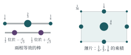

STEP II 1989，第 13 題
繼續之前，請先閱讀題目（原題為英文）。題目載於 STEP Support Programme 的題目資料庫： step.maths.org/questions/89-s2-q13
引子
一根均勻棒（uniform rod）受到推動和旋轉時，會有甚麼反應？原來就力學上的一切用途而言，一根棒的表現與三個質點（point mass）完全相同：兩端各佔其質量的六分之一，中點佔三分之二。無論你對這根棒做甚麼（推它，或讓它繞任何軸旋轉），都無法把它與這三個質點區分開來。
\(\frac16\)、\(\frac23\)、\(\frac16\) 這幾個數也許似曾相識。它們正是辛普森法則（Simpson’s rule）\(\int_{-a}^{a}f \approx 2a\bigl(\frac16f(-a) + \frac23f(0) + \frac16f(a)\bigr)\) 中的權（weight），這是你可能在高級程度（A level）課程中學過的數值積分（numerical integration）方法。這並非巧合：動力等效（dynamically equivalent）系統與數值積分法則，解決的其實是同一個問題。
轉動慣量（moment of inertia）已於 2019 年從 STEP 考試範圍中刪去。一個物體對某軸的轉動慣量是 \(\sum m_id_i^2\)，即每份質量乘以它與該軸距離的平方之總和（對連續物體而言則是一個積分）。質量為 \(m\)、長度為 \(2a\) 的均勻棒，對通過其中心的垂直軸的轉動慣量為 \(\frac13ma^2\)。平行軸定理（parallel axis theorem）指出：對任何軸的轉動慣量，等於對通過質心（centre of mass）的平行軸的轉動慣量加上 \(md^2\)，其中 \(d\) 是兩軸之間的距離。
動筆之前
兩個系統的質量相同、質心相同，而且對通過質心的每一條軸的轉動慣量也相同。為甚麼平行軸定理隨即保證，它們對其他任何軸的轉動慣量也相同？
對任何軸而言，兩個系統的轉動慣量都等於（對通過 \(O\) 的平行軸的轉動慣量）\(+ md^2\)。根據假設，第一項相同，而兩個系統的 \(m\) 和 \(d\) 也相同。■
逐步解題
階段 1 棒
在兩端各放質量 \(p\)，在中點放質量 \(q\)。由對稱性可知質心位置正確。總質量和對通過中心的垂直軸的轉動慣量，分別要求甚麼條件？
我們需要 \(2p + q = m\)，而對通過中點的垂直軸的轉動慣量必須是 \(\frac13ma^2\)：\(2pa^2 = \frac13ma^2\)。所以 \(p = \frac16m\)，\(q = \frac23m\)。
這是否對通過中心的每一條軸都成立，而不只是垂直的那一條？
考慮一條通過中心、與棒成 \(\psi\) 角的軸：棒上與中心相距 \(r\) 的點，與該軸的距離為 \(r\sin\psi\)。因此每一個轉動慣量（不論是棒的還是質點的）都是垂直軸情況下數值的 \(\sin^2\psi\) 倍，所以兩者對所有 \(\psi\) 都相等。（不在包含棒的平面上的軸也是同樣道理：只有各點與軸的距離才有關係，而對於一條通過 \(O\) 的直線上的點，這個距離與 \(r\) 成正比。）所以這根棒與質量 \(\frac16m\)、\(\frac23m\)、\(\frac16m\) 動力等效。■
階段 2 長方形
把薄片（lamina）切成與其中一邊平行的幼條，再把每一幼條換成它的三個等效質點。你會得到甚麼？接下來又可以怎樣做？
每一幼條都是一根棒，等效於把它質量的 \(\frac16\)、\(\frac23\)、\(\frac16\) 分別放在左邊、中線和右邊。把所有幼條加起來，薄片便等效於三根均勻棒（分別沿左邊、中間和右邊），質量為 \(\frac16M\)、\(\frac23M\)、\(\frac16M\)。現在再把這三根棒各自換成比例相同的三個質點。每一點的質量是兩個分數之積（圖 11.7.1）： \[\text{四角：} \tfrac16 \cdot \tfrac16 = \tfrac{1}{36}, \qquad \text{各邊中點：} \tfrac16 \cdot \tfrac23 = \tfrac19, \qquad \text{中心：} \tfrac23 \cdot \tfrac23 = \tfrac49,\] 全部再乘以 \(M\)。■
（嚴格來說，每一次替換都必須保持對通過整塊薄片中心的每一條軸的轉動慣量不變，而事實確是如此：每一次替換都保持了該部分的質量、質心，以及對通過該部分質心的各軸的轉動慣量，其餘的就交給平行軸定理。）
階段 3 正方形對其對角線
對於邊長為 \(2a\) 的正方形，對角線通過兩個角和中心，這些點沒有任何貢獻。另外兩個角與對角線的距離為 \(\sqrt2a\)，而四個邊的中點與它的距離為 \(\frac{a}{\sqrt2}\)。所以 \[I = 2 \cdot \tfrac{1}{36}M \cdot 2a^2 + 4 \cdot \tfrac19M \cdot \tfrac{a^2}{2} = \tfrac19Ma^2 + \tfrac29Ma^2 = \tfrac13Ma^2. \qed\] 這與對通過中心、平行於一邊的軸的轉動慣量相同。（這並非偶然：對正方形而言，在其平面上通過中心的所有軸都給出相同的答案，這可由練習中的一個對稱性論證得出。）
階段 4 非均勻棒
設棒的長度為 \(L\)，在距離其中一端 \(x\) 處的密度為 \(\frac{2mx}{L^2}\)。在 \(x = 0\)、\(\frac L2\)、\(L\) 處分別放質量 \(p_0\)、\(p_1\)、\(p_2\)。令總質量、質心和對該端的轉動慣量一一吻合，便得到三條方程。它們是甚麼？
這根棒的總質量為 \(m\)，對較輕一端的一階矩（first moment）為 \(\int_0^L x \cdot \frac{2mx}{L^2}\,\mathrm{d}x = \frac23mL\)，二階矩（second moment）為 \(\int_0^L x^2\cdot\frac{2mx}{L^2}\,\mathrm{d}x = \frac12mL^2\)。令這些量吻合： \[p_0 + p_1 + p_2 = m, \qquad \tfrac12Lp_1 + Lp_2 = \tfrac23mL, \qquad \tfrac14L^2p_1 + L^2p_2 = \tfrac12mL^2.\] 把第二式（除以 \(L\)）減去第三式（除以 \(L^2\)），得 \(\frac14p_1 = \frac16m\)，所以 \(p_1 = \frac23m\)，繼而 \(p_2 = \frac13m\)，\(p_0 = 0\)。只需要兩個質點：\(\frac23m\) 位於中點，\(\frac13m\) 位於較重的一端。■

回顧
令各階矩吻合。動力等效的意思，就是令質量分佈的零階矩、一階矩和二階矩一一吻合。
逐個維度建構。長方形是由棒組成的棒，所以它的權是乘積。
數一數方程和未知數的數目。要吻合的矩有三個，未知的質量也有三個；而有時解中恰好會出現一個零。
背後的數學
辛普森法則
令質量分佈的各階矩吻合，與設計一條數值積分法則是同一個問題。一條法則 \(\int_{-a}^{a}f(x)\,\mathrm{d}x \approx w_0f(-a) + w_1f(0) + w_2f(a)\) 若對 \(f = 1, x, x^2\) 精確成立，就必須滿足 \[w_0 + w_1 + w_2 = 2a, \qquad -aw_0 + aw_2 = 0, \qquad a^2w_0 + a^2w_2 = \tfrac23a^3,\] 這正是棒所要滿足的條件（其中 \(f = 1, x, x^2\) 分別扮演質量、一階矩和轉動慣量的角色）。其解為 \(w = 2a(\frac16, \frac23, \frac16)\)：這就是辛普森法則。對稱性還帶來額外的收穫：這條法則對 \(f = x^3\) 也精確成立，因為兩邊都等於零，所以辛普森法則能精確地積分三次多項式，而它對光滑函數的誤差與四階導數成正比。因此，一根棒與它的三個質點不僅在質量、質心和轉動慣量上吻合，連三階矩也吻合。
高斯求積法與慣性張量
如果位置和質量都可以自由選擇，兩個質點便已足夠：在 \(\pm\frac{a}{\sqrt3}\) 兩點各放一半質量。驗算：\(2 \cdot \frac12m \cdot \frac{a^2}{3} = \frac13ma^2\)。這就是兩點高斯－勒讓德法則（Gauss–Legendre rule）\(\int_{-a}^{a}f \approx a\bigl(f(-\frac{a}{\sqrt3}) + f(\frac{a}{\sqrt3})\bigr)\)，它同樣對三次多項式精確成立。高斯（Carl Friedrich Gauss）在 1814 年證明，只要巧妙地選取 \(n\) 個點，便能精確地積分次數為 \(2n - 1\) 的多項式；高斯求積法（Gaussian quadrature）如今已是數值分析（numerical analysis）的標準方法。
在力學中，一個物體對通過其中心的所有軸的轉動慣量，都記錄在一個 \(3 \times 3\) 對稱矩陣之中，稱為慣性張量（inertia tensor）。兩個物體若質量、質心和慣性張量都相同，對所有力的反應便完全一樣，這就是為甚麼工程師在模擬中可以用幾個質點取代一個複雜的部件。慣性張量的特徵向量（eigenvector）就是主軸（principal axes），即物體可以繞之穩定旋轉的軸。
思維技巧
如果兩個系統在問題所涉及的每一個量上都一致，就把複雜的那個換成簡單的那個。
這裏只有三個矩有關係，所以一根連續的棒可以換成三個質點。在大學裏，這個想法會以多種面貌出現：高斯求積法、電磁學和引力理論中的多極展開（multipole expansion）（在遠處，電荷或質量分佈只有頭幾個矩有影響），以及統計學中的矩估計法（method of moments）。
延伸練習
辛普森法則。用只有一個區間的辛普森法則估算 \(\int_0^1\frac{\mathrm{d}x}{1 + x^2}\)，並與 \(\frac\pi4\) 比較。驗證這條法則對 \(\int_{-1}^{1}x^3\,\mathrm{d}x\) 和 \(\int_{-1}^{1}x^2\,\mathrm{d}x\) 精確成立，但對 \(\int_{-1}^{1}x^4\,\mathrm{d}x\) 則不然。
所有軸都一樣。證明正方形薄片對在其平面上通過中心的任何軸的轉動慣量都是 \(\frac13Ma^2\)。（提示：九個等效質點在旋轉 \(90^\circ\) 之下是對稱的；這對一個關於 \(\cos\psi\) 和 \(\sin\psi\) 的二次式說明了甚麼？）
三角形。證明一塊質量為 \(M\) 的均勻三角形薄片，與位於其三邊中點、質量各為 \(\frac13M\) 的三個質點動力等效。
實心立方體。為一個均勻實心立方體找出一個由 \(27\) 個質點組成的動力等效系統，並用它求出邊長為 \(2a\) 的立方體對其一條棱的轉動慣量。
延伸閱讀
Daniel Kleppner & Robert Kolenkow, An Introduction to Mechanics（Cambridge University Press），關於剛體和轉動慣量的一章。
Endre Süli & David Mayers, An Introduction to Numerical Analysis（Cambridge University Press），關於數值積分的各章，包括辛普森法則和高斯求積法。
Philip Davis & Philip Rabinowitz, Methods of Numerical Integration（Dover）。經典參考書。